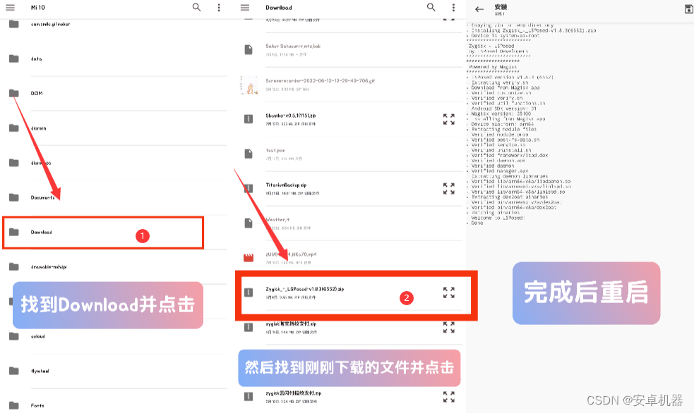
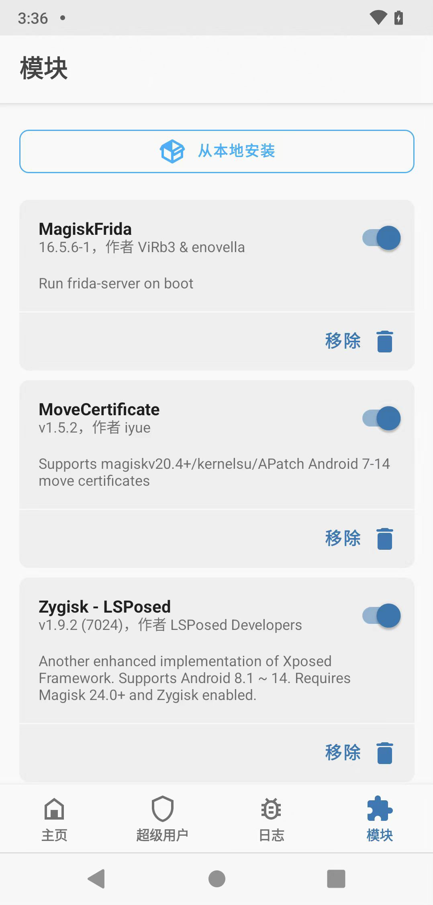

我的手机不想要它自己的样子——LSPosed 折腾记事
从一个想把浏览器手势换掉的下午说起，讲讲我怎么用 LSPosed 让手机变成我想要的模样：刷入、作用域、模块管理，踩过的坑和学到的事。
一个想改浏览器手势的下午
上周三下午三点，我坐在公司会议室等着产品经理开会，无聊地戳着手机上的浏览器。我用的这款浏览器有个让我别扭了好几个月的设定：底部上滑是新建标签页，而我习惯的浏览器，上滑应该是关闭当前页。
这个别扭小到不足以驱动我换浏览器，但大到每次都要愣一秒钟。就在我又一次错滑出一个空白标签的时候，我打开了 Magisk。
我的手机解锁 bootloader 已经两年了，Magisk 装着用来调试一些 root 权限的东西，但 Zygisk 开关一直没动过。我知道有个叫 LSPosed 的东西能改应用的行为，但一直觉得太折腾——模块装多了容易循环重启，以前用过 Riru 的时候踩过坑。
从 Zygisk 开关开始
Magisk 设置里翻到 Zygisk，打开了那个开关。手机提示重启，我点了同意。重启的那几十秒里，我在脑子里过了一遍以前的教训：版本不配套会激活失败，模块装错了会循环重启，刷完之后要先装 manager 不然看不见模块。
但这次感觉不一样。Zygisk 是 Magisk 内置的，不像当年 Riru 是额外刷的 zip，和面具本体经常版本打架。重启回来之后，Magisk 模块页多了一个 Zygisk 的条目，状态显示已启用。
接下来就是装 LSPosed 本体。这个框架的官网上有完整的刷入指引，安装包从官方下载，放到了 Download 目录，Magisk 模块页点"从本地安装"，选那个 zip 文件。控制台开始滚动日志，我盯着等那个 Done 字样——版本检查通过了，Zygisk 状态正常，最后一行跳出来 Done。

重启之后，Magisk 模块列表里出现了框架条目，作者一栏写着官方开发团队，版本号和我下载的那个对上了。这一刻才算真的装上了。

装 manager 和第一个模块
LSPosed 本体刷完只是一半，没有 manager 应用你什么都看不见——模块没法勾选作用域，开关也没法管理。我从同一个地方把 manager 装上，打开之后，应用图标静静躺在桌面，点开是一张空白的模块列表。
真正的乐趣从找模块开始。我第一个找的就是改浏览器手势的模块，搜了一圈，找到一个叫"浏览器手势增强"的，装完回到 manager，它出现在模块列表里。
然后就到了最关键的一步：勾作用域。这个模块的描述写着"只动指定浏览器"，所以我只勾了我想改手势的那款浏览器，没有勾其他任何应用，更没勾系统框架。
这里我得说一句，以前我对作用域的态度是"多勾总比少勾好"，结果装了个改状态栏的模块顺手勾了几个银行应用，后来那几个应用启动就崩，排查了半天才发现是这个模块的锅。作用域的纪律真的很重要——模块改的是"某个应用里的东西"就勾那个应用，改的是"所有应用共用的系统部分"才勾系统框架，多勾无益，白担风险。
勾完之后强停浏览器重开，打开试了一下上滑手势，这回是关闭标签页了。那个别扭了好几个月的小问题，就这么解决了。
完整性检查那点事
装好框架之后，我第一个想到的是那些用了完整性检查的应用——银行、支付、还有一个远程办公的客户端。我的经验是这样的：软件级校验的那些，作用域里不给它们勾任何模块，再配合 DenyList 加 Shamiko，大部分都能正常用；但硬件级强校验的，框架活跃的时候基本过不去，这是原理层面的限制，不是配置问题。
远程办公客户端这次真的挂了，直接提示环境异常拒绝启动。试了 DenyList，没用。后来去lsposed文档翻了一下才弄明白，这个应用用的是硬件级的校验锚定。我放弃了，把这个应用留在没 root 的备用手机上——玩机设备和金融设备分离，这是社区十年下来最实用的建议，没必要跟它死磕。
好在大部分日常用的应用都没这个问题，框架在它们进程里不存在，该怎么用怎么用。
装了十几个模块之后的教训
第一个月我装了十几个模块：改状态栏的、换通知风格的、给另一个聊天应用加双击翻译的、自动记录每个应用使用时长的……直到有一天早上，手机开机直接卡在厂商 logo 循环重启。
我第一反应是安全模式。LSPosed 内置熔断机制，安全模式启动会停用全部模块，这次顺利开机了。打开 manager，逐个禁用模块再重启排查，最后发现是那个改通知风格的模块和一个系统界面补丁冲突了——两个都钩系统界面，打架了。
删掉那个通知风格模块之后，一切恢复正常。这之后我定下了一条规矩：模块从少到多逐个加，每装一个测试半小时，没问题再加下一个。不要一口气装十来个，出问题了排查起来要命。
刷框架本身其实没那么大风险，社区千万级装机量，因为刷框架本体变砖的案例极其罕见。真正危险的是装模块和乱动系统分区——乱刷第三方 ROM、误刷错误机型的镜像、Recovery 里乱格式化，这些才是真的会把手机弄成砖的操作，而且和框架本身没关系。
现在的样子
三个月过去了，我手机上还留着五个模块：浏览器手势、状态栏时钟样式、聊天应用翻译、应用使用统计、还有一个自动跳过启动页广告的。没有再循环重启过，完整性检查该过的过、过不了的老老实实放备用机，LSPosed 的 manager 里作用域勾得清清楚楚。
回头想，Zygisk 开关那个下午只是个开始。从刷入框架、装 manager、找第一个模块、勾对作用域，到理解完整性检查的边界、学会安全模式自救、建立逐个装模块的习惯——这一套下来，我对 Android 应用层的运作方式理解深了一层，也对"用工具改造自己的设备"这件事有了更踏实的信心。
如果你也想试试，先备份 boot 镜像，解锁那一刻就把数据备份好，按流程来：核对版本、刷入、模块从少到多逐个加。每一步都有退路，安全模式、Magisk 模块管理、Recovery 删模块，三级保险在那等着。
这套资料在三个仓库都能拿到：GitHub 上维护着主备份，Gitee 做了国内镜像方便访问，GitCode 还有一份归档。挑一个你方便的源就行。